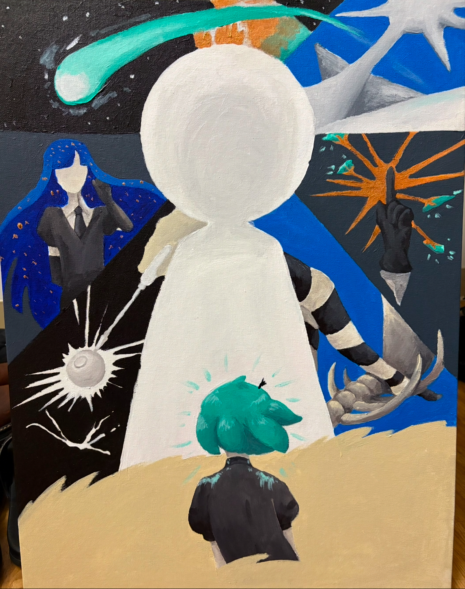
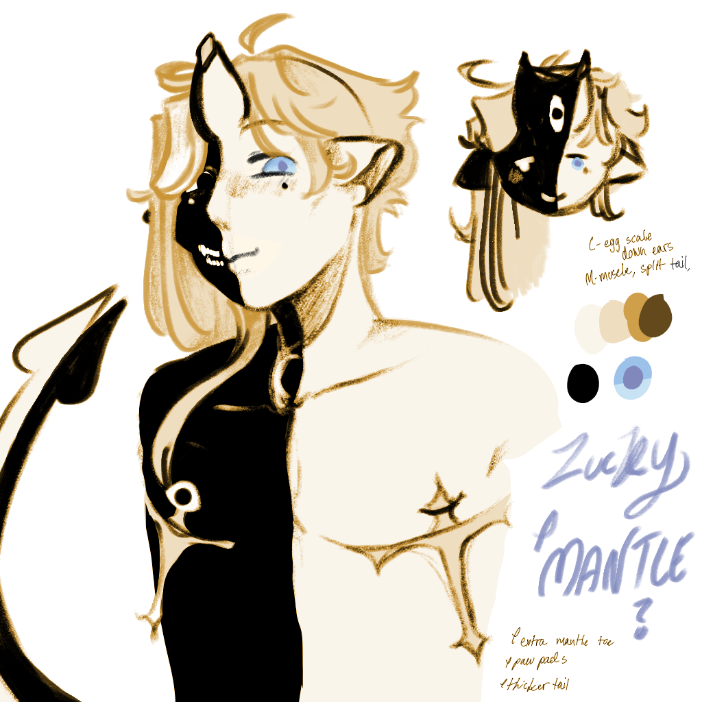
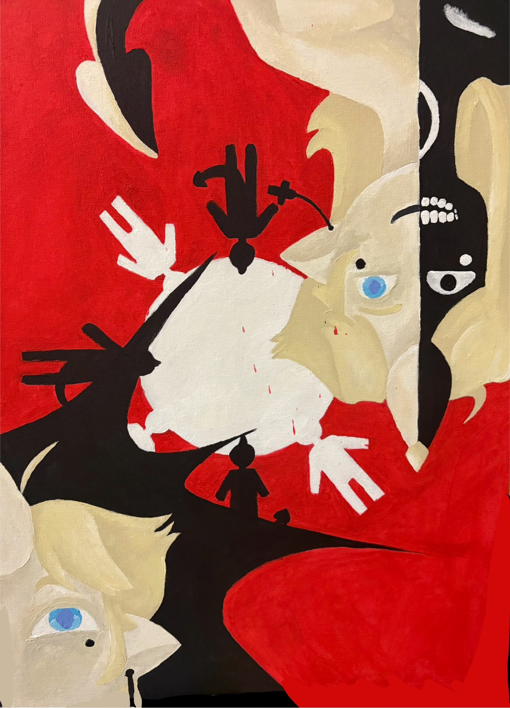

This is a sort of portfolio and/or resume of sorts for the art I've created. Pieces were made during the first semester of my sophomore year during fall 2025.

A piece I made a manga. that I really like called. Land of the Lustrous or its Japanese name, Houseki no Kuni by author Haruko Ichikawa. Created Dec. 2025.

Wisteria's reference art (also made by me, drawn on my iPad using an Apple Pencil). Created Aug. 2025.

A piece I made of my character Wisteria with a movie poster-esque feel. Created Nov. 2025.